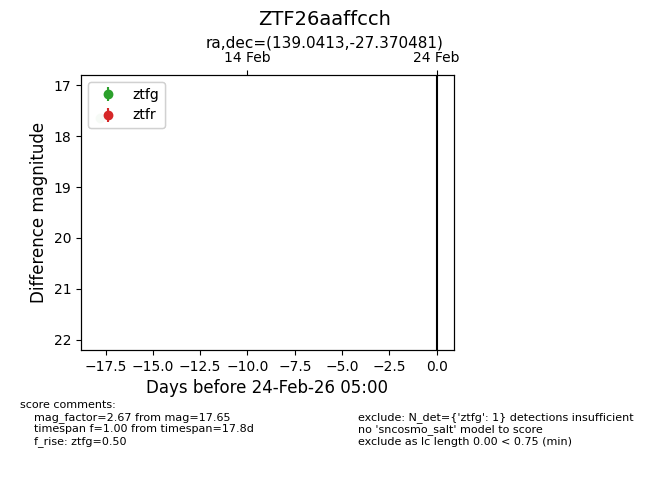
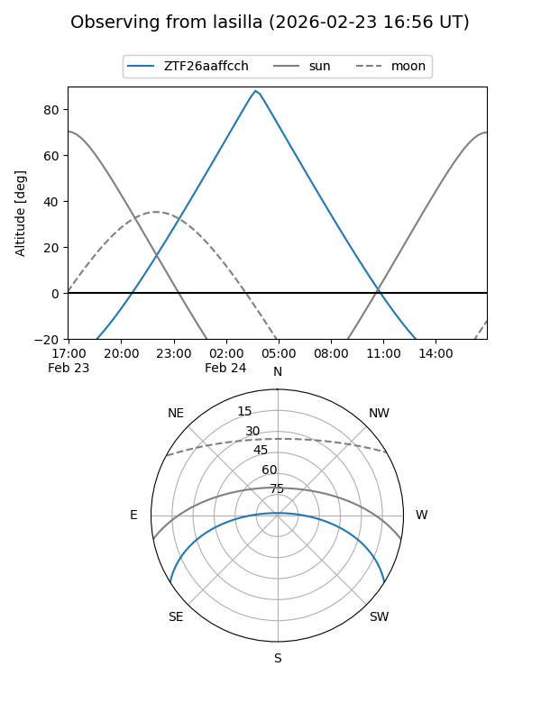
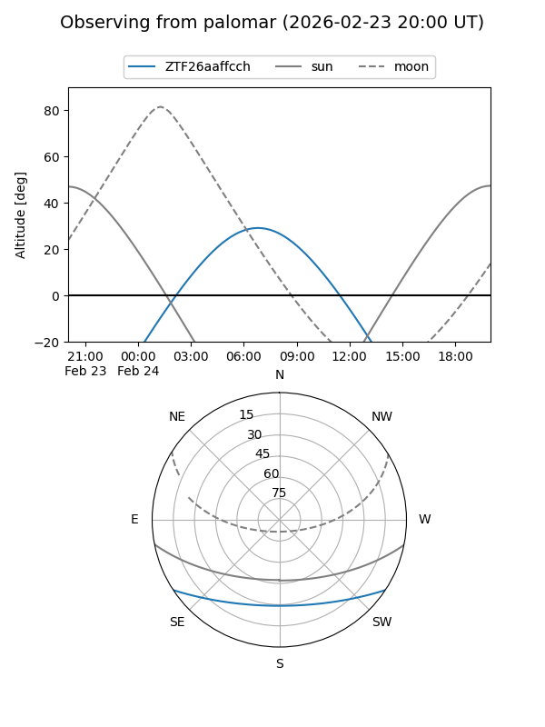

ZTF26aaffcch
Target ZTF26aaffcch at 2026-02-24 09:08
Aliases and brokers:
FINK: link
Lasair: link
ALeRCE: link
alt names
ZTF26aaffcch (ztf,fink_ztf)
Coordinates:
equatorial (ra, dec) = 139.0413,-27.37048
equatorial (HMS+DMS) = 09:16:09.91,-27:22:13.73
galactic (l, b) = (255.0561,+14.88922)
Flags:
Photometry:
last ztfg=17.65
1 ztfg detections
Lightcurve

Visibility


Additional plots